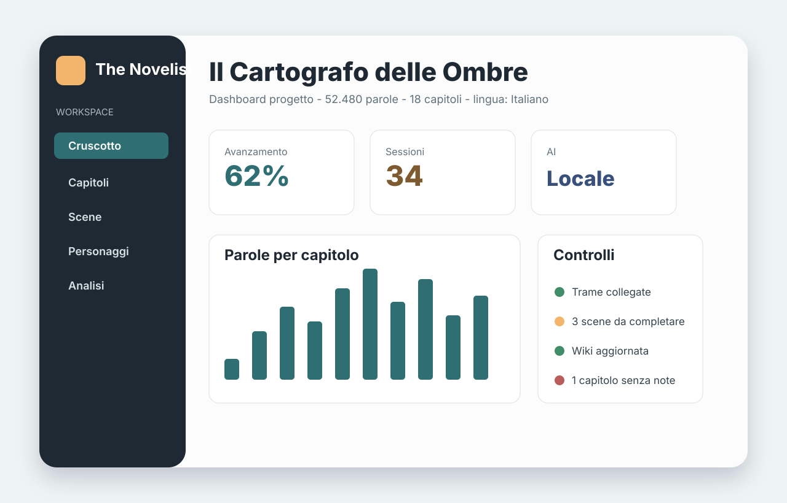
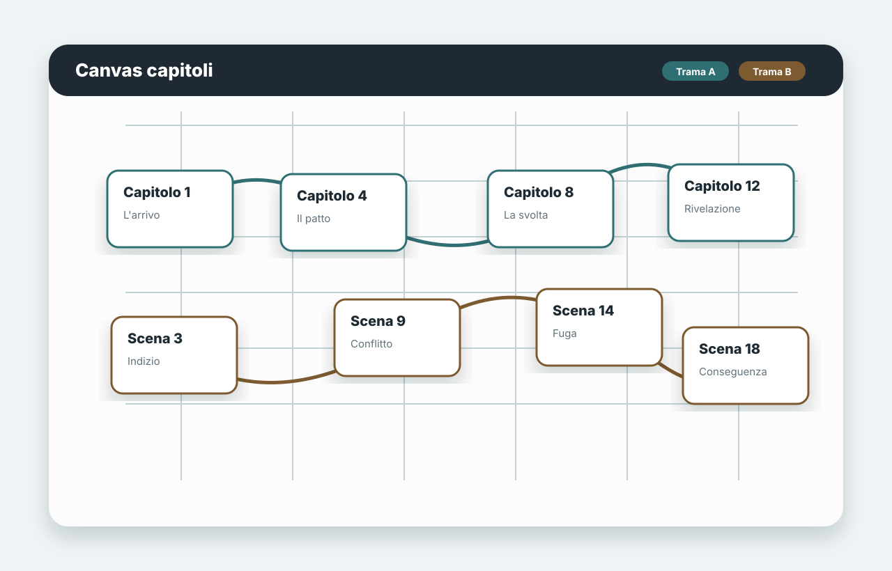
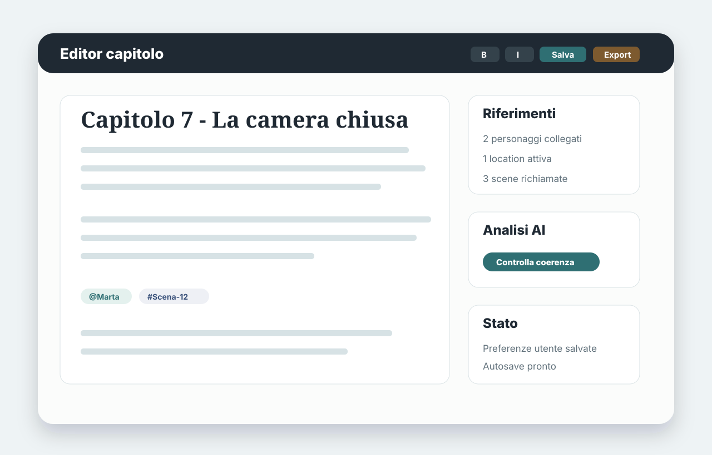

Cruscotto progetto
Metriche, obiettivi, snapshot, stato autosave, memoria Wiki e controlli editoriali in un'unica vista.
Desktop app open source
Progetta, scrivi, revisiona ed esporta romanzi con canvas narrativi, editor rich text, memoria locale del progetto e assistenza AI opzionale.
Per scrittori e progettisti narrativi
The Novelist unisce struttura, scrittura e revisione in una singola app desktop. I progetti restano sul computer dell'utente; le funzioni AI sono opzionali e controllate da impostazioni di consenso.
Funzionalita principali
Metriche, obiettivi, snapshot, stato autosave, memoria Wiki e controlli editoriali in un'unica vista.
Nodi e connessioni per capitoli, trame, scene, personaggi e location, con trame parallele colorate.
Scrittura per capitoli e scene, formattazione, ricerca, riferimenti a schede e vista lettura.
Wiki Markdown interrogabile, timeline cronologica e revisioni per seguire l'evoluzione del progetto.
Analisi di coerenza, eventi aperti, stile e ritmo con OpenAI API o Ollama, solo quando abilitate.
Esporta capitoli e manoscritti in DOCX, ePUB o stampa, con release pubblicate su GitHub.
Immagini dell'app



AI e privacy
Le funzioni AI sono disattivate per default nei nuovi progetti. L'utente decide se abilitare il provider, consentire chiamate API esterne e condividere la memoria locale del progetto con servizi remoti.
Download e codice
Le build pubbliche sono disponibili nelle GitHub Releases. Il codice sorgente, la documentazione utente e il modello di sicurezza sono nel repository.